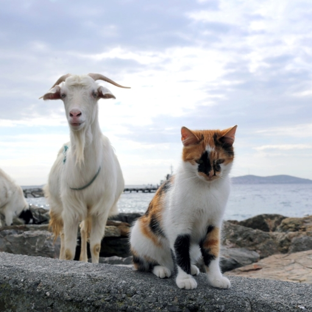
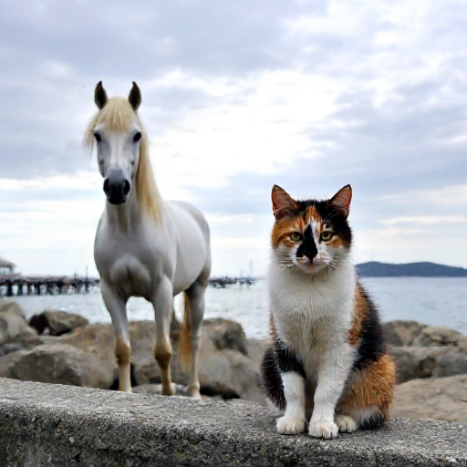
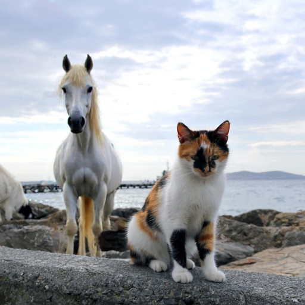

DecFlowEdit
Self-localized image editing via guidance decoupling
Localize without CFG.
Edit with default CFG.



Self-localized image editing via guidance decoupling
Localize without CFG.
Edit with default CFG.


